Điểm số và chơi lại
Trong phần này, chúng ta sẽ thêm điểm số, phát nhạc và khả năng khởi động lại trò chơi.
Chúng ta phải theo dõi điểm số hiện tại trong một biến và hiển thị nó trên màn hình bằng một giao diện tối giản. Chúng ta sẽ dùng một nhãn văn bản để làm việc đó.
Trong scene chính, thêm một node con Control mới vào Main và đặt tên là UserInterface. Hãy đảm bảo bạn đang ở màn hình 2D, nơi bạn có thể chỉnh sửa giao diện người dùng (UI).
Thêm một node Label và đặt tên là ScoreLabel
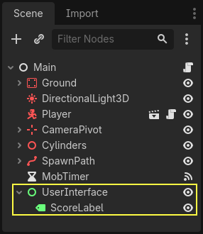
Trong Inspector, đặt Text của Label thành một nội dung giữ chỗ như "Score: 0".

Ngoài ra, văn bản mặc định có màu trắng, giống với nền của trò chơi. Chúng ta cần đổi màu của nó để có thể nhìn thấy khi chạy.
Cuộn xuống Theme Overrides, mở rộng Colors và bật Font Color để tô văn bản thành màu đen (tương phản tốt với scene 3D màu trắng)

Cuối cùng, nhấp và kéo văn bản trong viewport để di chuyển nó ra khỏi góc trên bên trái.
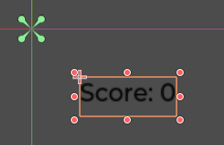
Node UserInterface cho phép chúng ta nhóm UI vào một nhánh của cây scene và dùng một resource theme sẽ được truyền xuống tất cả các node con của nó. Chúng ta sẽ dùng nó để đặt font cho trò chơi.
Tạo theme cho UI
Một lần nữa, chọn node UserInterface. Trong Inspector, tạo một resource theme mới trong Theme -> Theme.
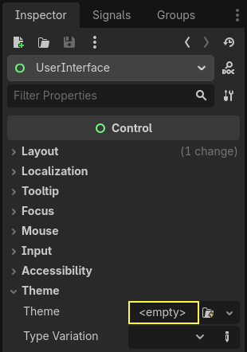
Nhấp vào nó để mở trình chỉnh sửa theme ở bảng phía dưới. Nó cho bạn xem trước tất cả các widget UI có sẵn sẽ trông như thế nào với resource theme của bạn.
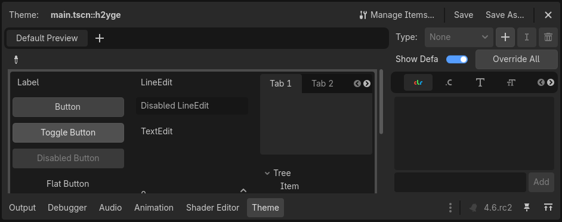
Theo mặc định, một theme chỉ có vài thuộc tính: Default Base Scale, Default Font và Default Font Size.
Xem thêm
Bạn có thể thêm nhiều thuộc tính hơn vào resource theme để thiết kế các giao diện người dùng phức tạp, nhưng điều đó nằm ngoài phạm vi của loạt bài này. Để tìm hiểu thêm về việc tạo và chỉnh sửa theme, xem Giới thiệu về tùy biến giao diện GUI.
Default Font cần một file font giống như các font bạn có trên máy tính. Hai định dạng file font phổ biến là TrueType Font (TTF) và OpenType Font (OTF).
Trong dock FileSystem, mở rộng thư mục fonts rồi nhấp và kéo file Montserrat-Medium.ttf mà chúng tôi đã đưa vào dự án thả vào Default Font. Văn bản sẽ xuất hiện lại trong bản xem trước theme.
Văn bản hơi nhỏ. Đặt Default Font Size thành 22 pixel để tăng kích thước văn bản.
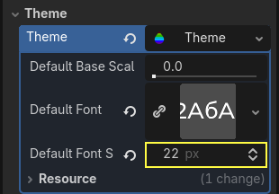
Theo dõi điểm số
Tiếp theo, hãy làm phần điểm số. Gắn một script mới vào ScoreLabel và định nghĩa biến score.
extends Label
var score = 0
using Godot;
public partial class ScoreLabel : Label
{
private int _score = 0;
}
Điểm số sẽ tăng thêm 1 mỗi khi chúng ta dẫm bẹp một quái vật. Chúng ta có thể dùng signal squashed của chúng để biết khi nào điều đó xảy ra. Tuy nhiên, vì chúng ta tạo instance quái vật từ code, chúng ta không thể kết nối signal của mob với ScoreLabel qua trình chỉnh sửa.
Thay vào đó, chúng ta phải tạo kết nối từ code mỗi khi sinh ra một quái vật.
Mở script main.gd. Nếu nó vẫn đang mở, bạn có thể nhấp vào tên của nó ở cột bên trái của trình chỉnh sửa script.

Ngoài ra, bạn có thể nhấp đúp vào file main.gd trong dock FileSystem.
Ở cuối hàm _on_mob_timer_timeout(), thêm dòng sau:
func _on_mob_timer_timeout():
#...
# We connect the mob to the score label to update the score upon squashing one.
mob.squashed.connect($UserInterface/ScoreLabel._on_mob_squashed.bind())
private void OnMobTimerTimeout()
{
// ...
// We connect the mob to the score label to update the score upon squashing one.
mob.Squashed += GetNode<ScoreLabel>("UserInterface/ScoreLabel").OnMobSquashed;
}
Dòng này có nghĩa là khi mob phát signal squashed, node ScoreLabel sẽ nhận nó và gọi hàm _on_mob_squashed().
Quay lại script score_label.gd để định nghĩa hàm callback _on_mob_squashed().
Ở đó, chúng ta tăng điểm số và cập nhật văn bản được hiển thị.
func _on_mob_squashed():
score += 1
text = "Score: %s" % score
public void OnMobSquashed()
{
_score += 1;
Text = $"Score: {_score}";
}
Dòng thứ hai dùng giá trị của biến score để thay thế chỗ giữ chỗ %s. Khi dùng tính năng này, Godot tự động chuyển đổi giá trị thành chuỗi văn bản, rất tiện khi xuất văn bản ra label hoặc khi dùng hàm print().
Xem thêm
Bạn có thể tìm hiểu thêm về định dạng chuỗi tại đây: Chuỗi định dạng trong GDScript. Trong C#, hãy cân nhắc dùng nội suy chuỗi với "$".
Giờ bạn có thể chơi và dẫm bẹp vài kẻ địch để thấy điểm số tăng lên.
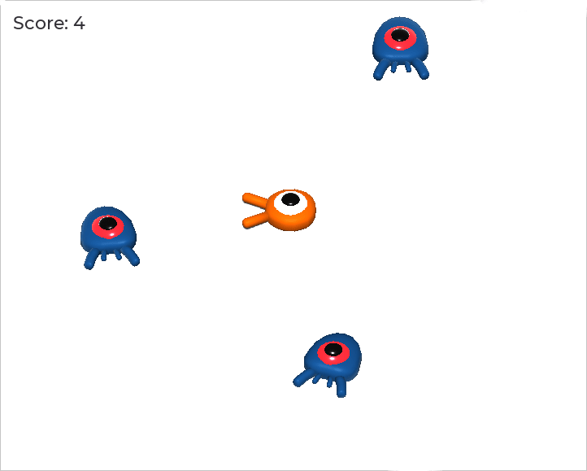
Ghi chú
Trong một trò chơi phức tạp, bạn có thể muốn tách hoàn toàn giao diện người dùng khỏi thế giới game. Trong trường hợp đó, bạn sẽ không theo dõi điểm số trên label. Thay vào đó, bạn có thể muốn lưu nó trong một đối tượng riêng, chuyên dụng. Nhưng khi làm prototype hoặc khi dự án đơn giản, giữ cho code đơn giản là hoàn toàn ổn. Lập trình luôn là một việc cân bằng.
Chơi lại game
Giờ chúng ta sẽ thêm khả năng chơi lại sau khi chết. Khi người chơi chết, chúng ta sẽ hiển thị một thông báo trên màn hình và chờ đầu vào.
Quay lại scene main.tscn, chọn node UserInterface, thêm một node con ColorRect và đặt tên là Retry. Node này tô một hình chữ nhật bằng một màu đồng nhất và sẽ đóng vai trò lớp phủ để làm tối màn hình.
Để nó trải rộng khắp viewport, bạn có thể dùng menu Anchor Preset trên thanh công cụ.
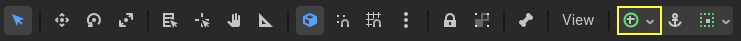
Mở nó và áp dụng lệnh Full Rect.

Không có gì xảy ra. À, gần như không có gì; chỉ có bốn chốt màu xanh lá di chuyển đến các góc của hộp chọn.

Đó là vì các node UI (tất cả những node có biểu tượng màu xanh lá) hoạt động với anchor và margin tương đối so với hộp bao của node cha. Ở đây, node UserInterface có kích thước nhỏ và node Retry bị giới hạn bởi nó.
Chọn UserInterface và cũng áp dụng Anchor Preset -> Full Rect cho nó. Node Retry giờ sẽ trải rộng khắp viewport.
Hãy đổi màu của nó để làm tối khu vực chơi. Chọn Retry và trong Inspector, đặt Color của nó thành một màu vừa tối vừa trong suốt. Để làm vậy, trong bảng chọn màu, kéo thanh trượt A sang trái. Nó điều khiển kênh Alpha của màu, tức là độ mờ đục/trong suốt của nó.

Tiếp theo, thêm một Label làm con của Retry và đặt Text của nó là "Press Enter to retry." Để di chuyển và neo nó vào giữa màn hình, hãy áp dụng Anchor Preset -> Center cho nó.
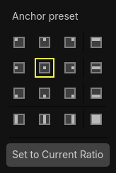
Lập trình tùy chọn chơi lại
Giờ chúng ta có thể chuyển sang code để hiện và ẩn node Retry khi người chơi chết và chơi lại.
Mở script main.gd. Đầu tiên, chúng ta muốn ẩn lớp phủ khi bắt đầu trò chơi. Thêm dòng này vào hàm _ready().
func _ready():
$UserInterface/Retry.hide()
public override void _Ready()
{
GetNode<Control>("UserInterface/Retry").Hide();
}
Sau đó, khi người chơi bị trúng đòn, chúng ta hiển thị lớp phủ.
func _on_player_hit():
#...
$UserInterface/Retry.show()
private void OnPlayerHit()
{
//...
GetNode<Control>("UserInterface/Retry").Show();
}
Cuối cùng, khi node Retry hiển thị, chúng ta cần lắng nghe đầu vào của người chơi và khởi động lại trò chơi nếu họ nhấn Enter. Để làm vậy, chúng ta dùng callback có sẵn _unhandled_input(), được kích hoạt với mọi input.
Nếu người chơi đã nhấn input action được định nghĩa sẵn ui_accept và Retry đang hiển thị, chúng ta tải lại scene hiện tại.
func _unhandled_input(event):
if event.is_action_pressed("ui_accept") and $UserInterface/Retry.visible:
# This restarts the current scene.
get_tree().reload_current_scene()
public override void _UnhandledInput(InputEvent @event)
{
if (@event.IsActionPressed("ui_accept") && GetNode<Control>("UserInterface/Retry").Visible)
{
// This restarts the current scene.
GetTree().ReloadCurrentScene();
}
}
Hàm get_tree() cho chúng ta truy cập đối tượng toàn cục SceneTree, cho phép tải lại và khởi động lại scene hiện tại.
Thêm âm nhạc
Để thêm nhạc phát liên tục ở nền, chúng ta sẽ dùng một tính năng khác của Godot: autoload.
Để phát âm thanh, tất cả những gì bạn cần làm là thêm một node AudioStreamPlayer vào scene và gắn một file âm thanh cho nó. Khi bạn bắt đầu scene, nó có thể tự động phát. Tuy nhiên, khi bạn tải lại scene, như chúng ta làm để chơi lại, các node âm thanh cũng bị đặt lại, và nhạc sẽ phát lại từ đầu.
Bạn có thể dùng tính năng autoload để Godot tự động tải một node hoặc một scene khi bắt đầu trò chơi, bên ngoài scene hiện tại. Bạn cũng có thể dùng nó để tạo các đối tượng có thể truy cập toàn cục.
Tạo một scene mới bằng cách vào menu Scene và nhấp New Scene, hoặc dùng biểu tượng + bên cạnh scene đang mở.
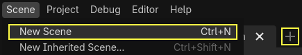
Nhấp vào nút Other Node để tạo một AudioStreamPlayer và đổi tên nó thành MusicPlayer.

Chúng tôi đã đưa một bản nhạc nền vào thư mục art/, House In a Forest Loop.ogg. Nhấp và kéo nó vào thuộc tính Stream trong Inspector. Ngoài ra, hãy bật Autoplay để nhạc tự động phát khi bắt đầu trò chơi.
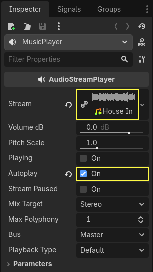
Lưu scene với tên music_player.tscn.
Chúng ta phải đăng ký nó làm autoload. Vào menu Project -> Project Settings… và nhấp vào tab Globals -> Autoload.
Trong ô Path, bạn cần nhập đường dẫn đến scene của mình. Nhấp vào biểu tượng thư mục để mở trình duyệt file và nhấp đúp vào music_player.tscn. Sau đó, nhấp nút Add ở bên phải để đăng ký node.
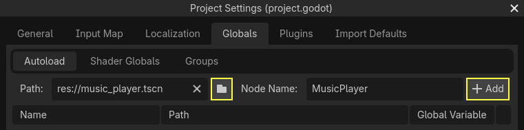
music_player.tscn giờ sẽ được tải vào bất kỳ scene nào bạn mở hoặc chạy. Vì vậy, nếu bạn chạy trò chơi bây giờ, nhạc sẽ tự động phát trong mọi scene.
Trước khi kết thúc bài học này, hãy xem nhanh cách mọi thứ hoạt động bên dưới. Khi bạn chạy game, dock Scene sẽ thay đổi và hiển thị hai tab: Remote và Local.
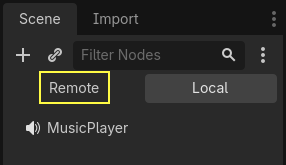
Tab Remote cho phép bạn xem cây node của game đang chạy. Tại đó, bạn sẽ thấy node Main cùng mọi thứ mà scene chứa, và các mob đã được tạo instance ở phía dưới.

Ở trên cùng là autoload MusicPlayer và một node root, chính là viewport của game.
Vậy là xong bài học này. Trong phần tiếp theo, chúng ta sẽ thêm hoạt ảnh để game trông đẹp hơn và mang lại cảm giác tốt hơn nhiều.
Dưới đây là script main.gd hoàn chỉnh để bạn tham khảo.
extends Node
@export var mob_scene: PackedScene
func _ready():
$UserInterface/Retry.hide()
func _on_mob_timer_timeout():
# Create a new instance of the Mob scene.
var mob = mob_scene.instantiate()
# Choose a random location on the SpawnPath.
# We store the reference to the SpawnLocation node.
var mob_spawn_location = get_node("SpawnPath/SpawnLocation")
# And give it a random offset.
mob_spawn_location.progress_ratio = randf()
var player_position = $Player.position
mob.initialize(mob_spawn_location.position, player_position)
# Spawn the mob by adding it to the Main scene.
add_child(mob)
# We connect the mob to the score label to update the score upon squashing one.
mob.squashed.connect($UserInterface/ScoreLabel._on_mob_squashed.bind())
func _on_player_hit():
$MobTimer.stop()
$UserInterface/Retry.show()
func _unhandled_input(event):
if event.is_action_pressed("ui_accept") and $UserInterface/Retry.visible:
# This restarts the current scene.
get_tree().reload_current_scene()
using Godot;
public partial class Main : Node
{
[Export]
public PackedScene MobScene { get; set; }
public override void _Ready()
{
GetNode<Control>("UserInterface/Retry").Hide();
}
public override void _UnhandledInput(InputEvent @event)
{
if (@event.IsActionPressed("ui_accept") && GetNode<Control>("UserInterface/Retry").Visible)
{
// This restarts the current scene.
GetTree().ReloadCurrentScene();
}
}
private void OnMobTimerTimeout()
{
// Create a new instance of the Mob scene.
Mob mob = MobScene.Instantiate<Mob>();
// Choose a random location on the SpawnPath.
// We store the reference to the SpawnLocation node.
var mobSpawnLocation = GetNode<PathFollow3D>("SpawnPath/SpawnLocation");
// And give it a random offset.
mobSpawnLocation.ProgressRatio = GD.Randf();
Vector3 playerPosition = GetNode<Player>("Player").position;
mob.Initialize(mobSpawnLocation.Position, playerPosition);
// Spawn the mob by adding it to the Main scene.
AddChild(mob);
// We connect the mob to the score label to update the score upon squashing one.
mob.Squashed += GetNode<ScoreLabel>("UserInterface/ScoreLabel").OnMobSquashed;
}
private void OnPlayerHit()
{
GetNode<Timer>("MobTimer").Stop();
GetNode<Control>("UserInterface/Retry").Show();
}
}